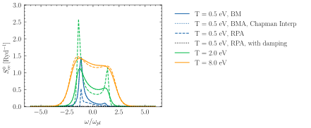

jaxrts.plasma_physics.chem_pot_interpolationIchimaru
- jaxrts.plasma_physics.chem_pot_interpolationIchimaru(T: Quantity, n_e: Quantity) Quantity[source]
Interpolation function for the chemical potential between the classical and quantum region, originally from [Ichimaru, 2018], eqn.(3.147). The same formula (with a number flip in parameter A) is in [Gregori et al., 2003], eqn. (19).
- Parameters:
T – The plasma temperature in Kelvin.
n_e – Electron density. Units of 1/[length]**3.
- Returns:
Quantity – Chemical potential
Examples using jaxrts.plasma_physics.chem_pot_interpolationIchimaru

Showing the relevance of the Born Mermin Approximation
Showing the relevance of the Born Mermin Approximation